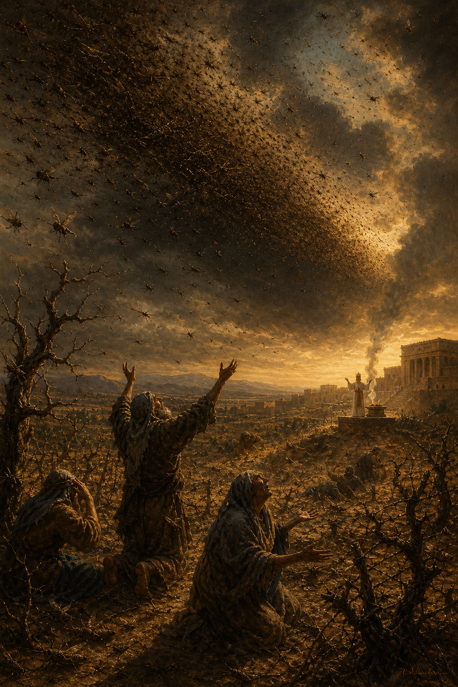

Old Testament · Book 29 of 39
Joel
A plague of locusts strips the land bare, and a prophet reads the devastation as a warning siren for the day of the LORD — then promises a day when God's own Spirit will be poured out on everyone.
An unprecedented locust swarm has devoured every crop in Judah, and Joel seizes the moment to call the nation to fasting and repentance, warning that this small-scale devastation is a preview of a far greater day of reckoning — before turning, unexpectedly, toward a promise of restoration and an outpoured Spirit for all people.
And it shall come to pass afterward, that I will pour out my spirit upon all flesh; and your sons and your daughters shall prophesy, your old men shall dream dreams, your young men shall see visions.
What happens in Joel
The book opens with a locust plague so severe that even the oldest generation has never seen its like — swarm after swarm has stripped vines, fig trees, and grain fields bare, cutting off the grain and drink offerings from the temple itself. Joel calls priests and people alike to a solemn fast, describing the approaching devastation in military language, as an invading army that no wall can stop and no sword can wound. Yet right at the heart of the warning comes an appeal grounded in God's character: "rend your heart, and not your garments," for the LORD is gracious, merciful, slow to anger, and quick to relent from judgment. The tone then turns decisively: God promises to restore the years the locusts consumed, to fill the threshing floors with grain and the vats with wine, and — most strikingly — to pour out his Spirit on all people regardless of age, sex, or social class, so that sons and daughters prophesy and old men dream dreams. The book closes with a vision of God gathering the nations for judgment in the valley of decision while restoring and protecting his own people forever.
Why it matters
Joel turns a specific agricultural disaster into a lens for understanding how God works through crisis: judgment is real, but it is never God's last word for those who turn back to him. Its promise of the Spirit poured out on all flesh becomes the very text Peter quotes at Pentecost in Acts 2, making Joel a hinge between an ancient plague and the birth of the church.